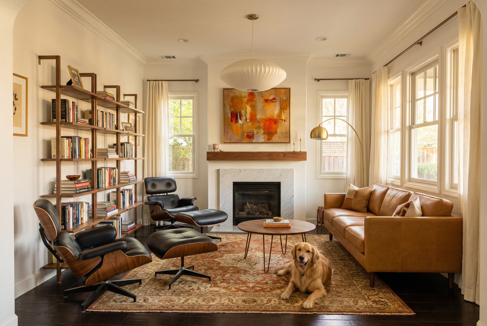
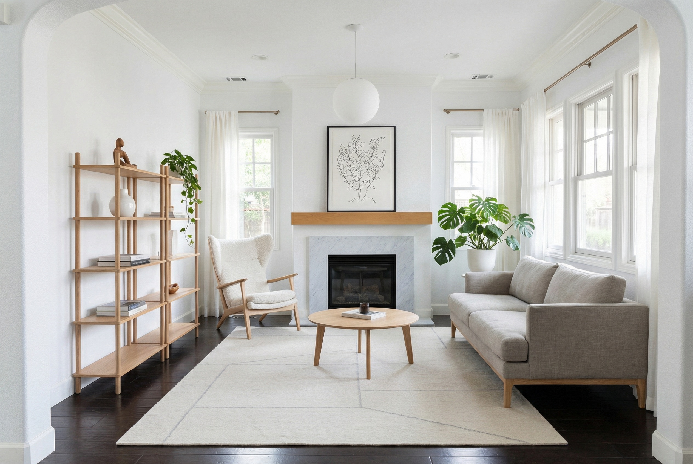
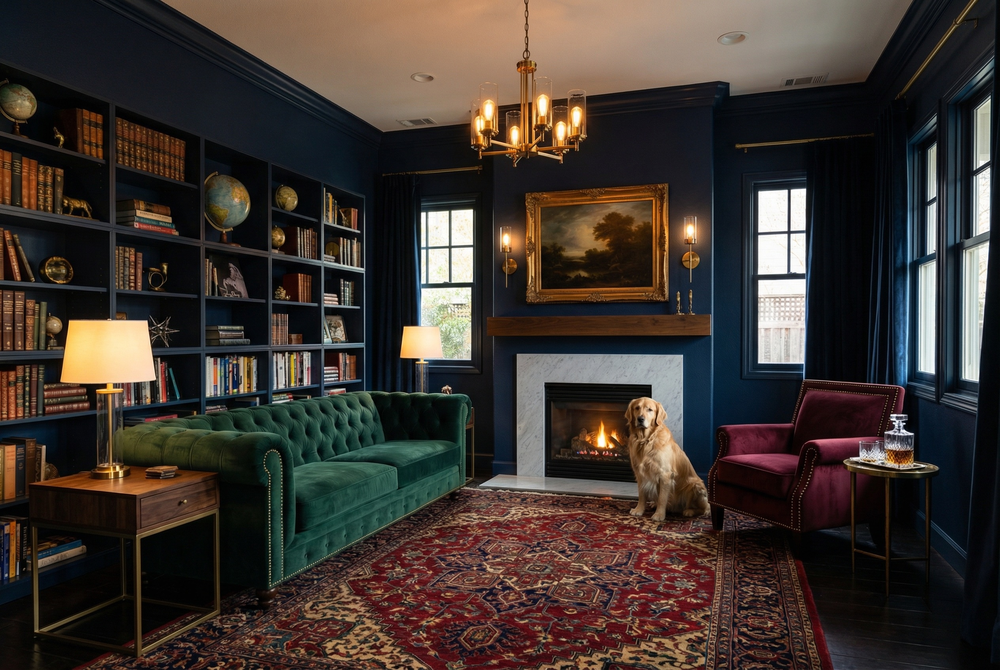
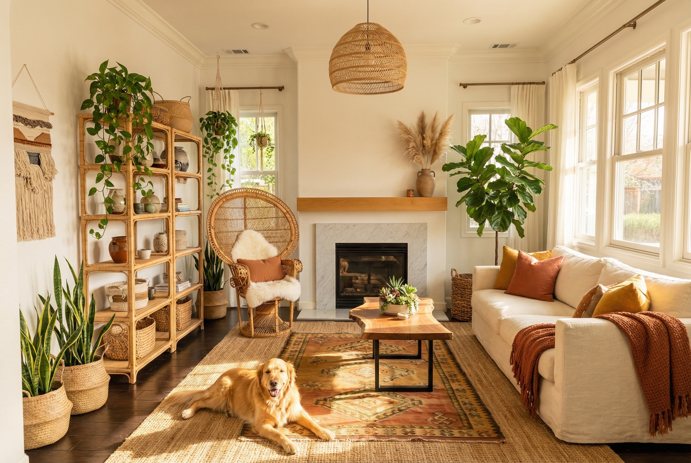

Hover over any image to discover key design decisions
Concept 01
Mid-Century Modern Warmth

Generating with Nano Banana Pro…
Design Goals
Transform the room into a warm, sophisticated space inspired by the 1950s–60s design movement. The focus is on rich natural materials—walnut wood, camel leather, and brass—paired with warm earth-toned textiles. The iconic Eames lounge chair becomes the statement piece, while a Nelson Bubble pendant replaces the existing fixture. Open walnut shelving creates a more curated, gallery-like feel. The overall palette shifts from cool grays to warm golds, rusts, and cognacs, with Cooper lounging happily by the fireplace on a vintage Persian rug.
Prompt Used
Redesign this living room in a warm mid-century modern style. The room has the same layout and architecture - dark hardwood floors, marble fireplace with wood mantel, bay windows with crown molding, and a large bookshelf wall on the left. Replace the gray sofa with a rich camel-colored leather sofa with clean lines and tapered walnut legs. Swap the dark blue wingback chair for a classic Eames-style lounge chair and ottoman in walnut shell with black leather cushions. Replace the Moroccan shag rug with a vintage Persian rug in warm rust, gold, and cream tones. Update the bookshelf to beautiful open walnut wood shelving with brass bracket accents. Replace the chandelier with a large Nelson Bubble pendant lamp. Add warm brass accents - a brass arc floor lamp, brass picture frames. Keep the marble fireplace, hang a large colorful abstract painting in warm oranges and golds above the mantel. Add a larger round walnut coffee table with hairpin legs. A beautiful golden retriever is lounging happily on the rug near the fireplace, looking relaxed and content. Warm, inviting afternoon golden light streaming through windows with cream linen curtains. Photorealistic interior design photography, wide angle lens, warm color temperature.
Concept 02
Scandinavian Minimalist

Generating with Nano Banana Pro…
Design Goals
Strip the room back to its essentials and let the beautiful architecture speak for itself. Inspired by Nordic design principles of light, simplicity, and function, this concept replaces all heavy furnishings with light oak wood pieces and clean-lined upholstery in soft neutral tones. The bookshelf becomes an exercise in restraint—curated to just a few meaningful objects. A single globe pendant replaces the chandelier. Cooper naps peacefully on the sofa, perfectly at home in this bright, calm sanctuary.
Prompt Used
Redesign this living room in a clean Scandinavian minimalist style, keeping the same room architecture and layout - the arched doorway on the left, bay windows on the right, fireplace centered on the back wall. Replace the gray sofa with a lighter warm-gray linen sofa with slim Scandinavian wooden legs. Replace the wingback chair with a light natural oak and white boucle lounge chair in a Hans Wegner style. Swap the Moroccan shag rug for a simple flat-weave rug in soft cream with subtle pale gray geometric lines. Replace the IKEA cube bookshelf with a sleek open light oak bookshelf with minimal curated objects - a few books, a white ceramic vase, a small plant. Replace the chandelier with a single large white matte globe pendant light. Add a round light oak coffee table. Keep the white walls bright and clean. Keep the marble fireplace, replace the art with a simple large botanical line drawing in a thin black frame. Add a few carefully placed green plants - a monstera in a white ceramic pot, a trailing plant on the shelf. Sheer white linen curtains letting in maximum light. A golden retriever is curled up comfortably on the sofa, napping peacefully. The room should feel bright, airy, calm, and intentionally minimal. Photorealistic interior design photography, wide angle lens, bright natural daylight, cool Nordic light.
Concept 03
Moody Library Lounge

Generating with Nano Banana Pro…
Design Goals
Lean hard into the room’s existing bookshelf wall and fireplace to create a dramatic, enveloping library atmosphere. Deep navy walls and matching built-in shelving filled with leather-bound books create an immersive cocoon of color. An emerald green velvet Chesterfield sofa and burgundy armchair bring rich jewel tones, while brass accents—chandelier, sconces, side tables—add warmth and glamour. Cooper sits regally by the fireplace, bathed in warm light, completing the ultimate evening retreat for reading, conversation, or a whiskey by the fire.
Prompt Used
Redesign this living room as a dramatic, moody library lounge, keeping the same room architecture and layout - arched doorway on left, bay windows on right, centered fireplace. Paint all walls a deep rich navy blue. Keep and expand the built-in bookshelves but paint them to match the dark navy walls, filled with leather-bound books, antique globes, and decorative brass objects. Replace the sofa with a deep emerald green velvet Chesterfield sofa with tufted buttons and rolled arms. Replace the wingback chair with a rich burgundy velvet armchair with brass nail-head trim. Add dark walnut and brass side tables. Replace the rug with a rich dark antique Persian rug in deep reds, navy, and gold. Replace the chandelier with a dramatic vintage brass and glass chandelier with warm Edison bulbs. Add brass wall sconces flanking the fireplace. Keep the marble fireplace surround, add a large moody oil landscape painting in an ornate gilt frame above it. Thick dark navy velvet curtains on the windows, partially drawn. A golden retriever is sitting regally next to the fireplace, bathed in the warm glow of the fire, looking distinguished. Warm dramatic evening lighting with pools of warm golden light from table lamps. A crystal whiskey decanter on the side table. Photorealistic interior design photography, warm dramatic lighting, shot on medium format camera.
Concept 04
California Bohemian

Generating with Nano Banana Pro…
Design Goals
Bring the relaxed, sun-drenched energy of California indoor-outdoor living into the space. Natural and organic materials take center stage—rattan, jute, live-edge wood, woven textiles, and clay. The room becomes a botanical sanctuary with lush indoor plants throughout. Earth tones of terracotta, amber, olive, and cream replace the current cool palette. Cooper stretches out in a sunbeam on the jute rug, perfectly embodying the relaxed California vibe. A rattan peacock chair and woven pendant light add sculptural interest, while layered rugs and oversized linen cushions create an inviting, lived-in comfort.
Prompt Used
Redesign this living room in a California bohemian organic modern style, keeping the same room architecture and layout - arched doorway on left, bay windows on right, centered fireplace with marble surround and wood mantel. Replace the gray sofa with a deep cream off-white linen sofa with oversized cushions and a relaxed lived-in look, draped with a terracotta-colored woven throw blanket. Replace the wingback chair with a large natural rattan peacock chair with a white sheepskin throw. Swap the Moroccan rug for a large natural jute rug layered with a smaller vintage Turkish kilim in warm earth tones - terracotta, amber, olive. Replace the IKEA bookshelf with open rattan and light wood shelving filled with ceramics, trailing pothos plants, woven baskets, and artisan pottery. Add many lush indoor plants throughout - a large fiddle leaf fig tree in a woven basket planter in the corner, hanging trailing plants, potted snake plants, a cluster of succulents on the coffee table. Replace the coffee table with a live-edge wood slab coffee table on a black iron base. Replace the chandelier with a large woven rattan pendant light. Keep the fireplace, place dried pampas grass arrangement in a clay vase on the mantel. A golden retriever is lying stretched out on the jute rug in a sunbeam, looking happy and relaxed. Warm terracotta and mustard throw pillows. Woven wall hanging on one wall. Bright airy natural California sunlight streaming in. Photorealistic interior design photography, warm golden natural light, wide angle lens.